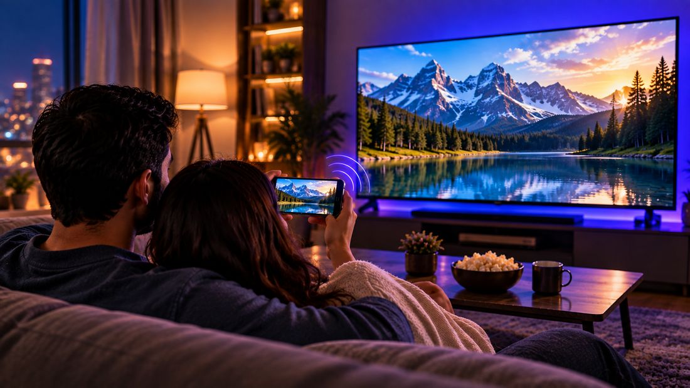

How to Cast Android to TV Without a Chromecast (2 Ways)
▶ Get Vidnexa on Google Play
No Chromecast? You can still get your phone's video onto the TV. There are two ways, and which one works depends on your TV: screen mirroring works on most Samsung, LG and other smart TVs, while casting works on TVs with Chromecast built in, such as Android TV and Google TV models. Here's how to do both, and how to tell which your TV supports.

What you need to cast a video
Casting isn't complicated, but it does depend on a couple of things being right before you even open an app:
- Your phone and your TV (or smart display) connected to the same Wi-Fi network — this is the single most common thing people miss.
- A TV that supports screen mirroring (most Samsung, LG, Hisense, TCL and other smart TVs, plus Fire TV and Roku devices) or has Chromecast built in (most Android TV and Google TV models, including many Sony, Philips, TCL and Xiaomi sets).
- Not sure which you have? Look in the TV's settings or manual for "Chromecast built-in" or "Google Cast". If it isn't there, use screen mirroring (Way 1).
Way 1: No Chromecast? Mirror your screen
Screen mirroring shows your whole phone screen on the TV. Most Android phones have it built in, under a different name depending on the brand.
On the TV
- Samsung TV: usually ready by default. If not, open Source and choose Screen Mirroring.
- LG TV: open the Screen Share app.
- Fire TV: look for a Display Mirroring or Screen Mirroring option in the TV settings (on models that support it).
- Other smart TVs and Roku: look for Screen Mirroring, Miracast or Wireless Display in the settings or inputs. Menu names vary by TV model and software version, so look for Screen Mirroring, Screen Share, Smart View or Cast in your TV settings.
On your Android phone
- Connect the phone and TV to the same Wi-Fi.
- Swipe down to open Quick Settings.
- Tap Smart View (Samsung), Screen Cast, Cast, Screen Mirroring or Wireless Display — the name depends on your phone. If you can't see it, tap the pencil icon to add it.
- Pick your TV and accept the prompt on the TV if one appears.
- Open your video in Vidnexa Player and turn the phone sideways for full screen.
Cast videos with Vidnexa
4K/8K video with HDR+ picture modes, music, Network Player, files & photos — one free-to-download app, a clean playback experience, no sign-up or account needed.
▶ Get it on Google PlayWay 2: Cast from Vidnexa (TVs with Chromecast built in)
Vidnexa Player has Google Cast built in. Casting sends the video itself to the TV, so your phone stays free and the picture isn't limited by your phone's screen. It works with TVs that have Chromecast built in and with Chromecast or Google TV devices.
Step by step
- Open Vidnexa Player and start playing the video, photo or song you want on the bigger screen.
- Tap the cast icon in the playback controls.
- Pick your TV or smart display from the list of devices found on your network.
- Playback switches to the TV within a couple of seconds — your phone becomes the remote, so you can pause, seek or lock the screen without interrupting anything.
Why use Vidnexa's built-in cast instead of a separate casting app
- One app for video, music, files, photos and casting — nothing extra to install just to reach the TV.
- Works with the videos, photos and songs you're already playing in Vidnexa. Whether the TV can play a particular file (for example some MKV or HEVC videos) depends on the TV or Cast device — if one won't play, screen mirroring is a good fallback.
- Clean design during use and no sign-up or account needed.
Troubleshooting — can't find your TV?
If your TV doesn't show up in the device list, it's almost always one of these:
- The phone is on mobile data instead of Wi-Fi, or the two devices are on different Wi-Fi networks (common on routers with separate 2.4GHz/5GHz names).
- The TV doesn't have Chromecast built in. Most Samsung and LG TVs don't, so they won't appear in Vidnexa's cast list — use screen mirroring (Way 1) instead.
- The TV's Chromecast/Google Cast feature is switched off in its settings.
- A public or office Wi-Fi network is blocking devices from discovering each other — try it on a home network to confirm.
- A quick restart of Wi-Fi on both the phone and the TV usually resolves a one-off connection glitch.
What you can cast from Vidnexa
Whatever you're playing in Vidnexa Player can go to the TV: videos, photos and music. Other apps handle their own casting. Services such as Netflix or YouTube have a cast button inside their own apps, so cast those from there instead.
Tips for smoother casting
- Stay close to your router. Casting depends on your Wi-Fi, so a strong signal matters most for large files such as 4K video.
- Use the same network name on both devices. If your router has separate names for 2.4 GHz and 5 GHz, connect the phone and the TV to the same one.
- Pause big downloads and cloud backups on other devices while you cast, because they compete for the same bandwidth.
- Keep your TV's software up to date. Casting support is delivered through it.
More reasons your TV may not appear
- A VPN on your phone can stop it from seeing devices on your home network. Turn the VPN off while you cast.
- Client isolation or a guest network. Some routers stop devices from seeing each other. Connect both to your main network.
- The TV is half asleep. If it's in standby with its network off, wake it fully and try again.
Bottom line
No Chromecast doesn't mean no TV. If your TV has Chromecast built in, cast straight from Vidnexa Player for the best quality. If it doesn't — which is the case for most Samsung and LG TVs — screen mirroring from your phone's Quick Settings gets the same video on the big screen in a few taps.
Step-by-step by TV type
Samsung TV (Tizen)
- Turn on the TV and connect it to the same Wi-Fi as your phone.
- On a Samsung phone, swipe down twice and tap Smart View. On other Android phones, look for Screen Cast, Screen Mirroring or Cast in Quick Settings.
- Pick your TV from the list and accept the prompt on the TV if one appears.
- Play the video in Vidnexa and turn the phone sideways for full screen.
LG TV (webOS)
- Open the Screen Share app on the TV (on many models, mirroring also starts automatically when a phone connects).
- Start Screen Mirroring / Screen Cast on your phone and choose the LG TV.
- Confirm the connection on the TV, then play your video.
Android TV and Google TV (Sony, TCL, Hisense, Xiaomi and others)
- Make sure the TV and phone are on the same Wi-Fi.
- Start a video in Vidnexa Player and tap the Cast icon.
- Choose the TV. The video plays on the TV while your phone works as the remote.
Fire TV and Roku
On Fire TV models that support it, look for a Display Mirroring or Screen Mirroring option in the settings, then start mirroring from your phone. On Roku, look for Screen mirroring in the system settings and choose Prompt or Always allow if offered, then mirror from your phone. Menu names vary by TV model and software version. Both use screen mirroring, not Google Cast.
Common casting errors and how to fix them
- The Cast icon doesn't appear in Vidnexa. Your TV probably doesn't have Chromecast built in. Use screen mirroring instead. If it does have Chromecast, check both devices are on the same Wi-Fi and restart the TV.
- Your phone has no Screen Mirroring option. Phone makers name it differently: Smart View, Screen Cast, Cast, Wireless display or Wireless projection. Google Pixel phones can't mirror to Miracast TVs; they can only cast the screen to Chromecast and Google TV devices through the Google Home app.
- Mirroring works but the video lags or stutters. Mirroring re-encodes your whole screen live, so it's sensitive to Wi-Fi quality. Move closer to the router, use the 5 GHz band if you can, and close other apps. If your TV supports Google Cast, casting from Vidnexa is smoother because the TV plays the stream itself.
- Picture on the TV but no sound. Check the TV volume and input, raise the media volume on your phone, then disconnect and reconnect.
- The connection keeps dropping. Turn off battery saver on the phone, keep the screen awake while mirroring, and avoid guest Wi-Fi networks, which often block devices from seeing each other.
Frequently asked questions
Can I cast to a TV without a Chromecast?
Yes. Most smart TVs, including Samsung and LG, support screen mirroring, which you can start from your Android phone's Quick Settings (Smart View, Screen Cast or Screen Mirroring). TVs with Chromecast built in, such as Android TV and Google TV models, can also receive casts directly from apps like Vidnexa Player.
Do I need a Chromecast to cast from Vidnexa Player?
Not if your TV has Chromecast built in, as most Android TV and Google TV models do. Vidnexa uses Google Cast, so TVs without it, including most Samsung and LG models, need screen mirroring instead, or a Chromecast or Google TV device.
How do I mirror my Android phone to a Samsung TV?
Connect both to the same Wi-Fi, swipe down to open Quick Settings, tap Smart View or Screen Mirroring and choose your TV. Accept the prompt on the TV if it appears.
Is screen mirroring the same as casting?
No. Casting sends the video file to the TV, so your phone stays free and quality is usually better. Mirroring copies your whole phone screen, including notifications, and quality depends on the connection.
Why can't my phone find my TV when I try to cast?
Usually the phone and TV are on different Wi-Fi networks, or the TV doesn't have Chromecast built in. Check both are on the same network; if your TV lacks Google Cast, use screen mirroring instead.
Does casting reduce video quality?
Casting sends the original file, so quality isn't reduced, but the TV or Cast device must support the video's format and resolution. Screen mirroring streams your phone's screen and is usually a little lower in quality.
Can I cast Netflix or YouTube from Vidnexa?
Vidnexa casts the videos, photos and music you play in Vidnexa. Streaming services such as Netflix or YouTube have their own cast button inside their apps.
Download Vidnexa Player Free
4K/8K video with HDR+ picture modes, music, Network Player, files & photos — one free-to-download app, a clean playback experience, no sign-up or account needed.
▶ Get it on Google Play